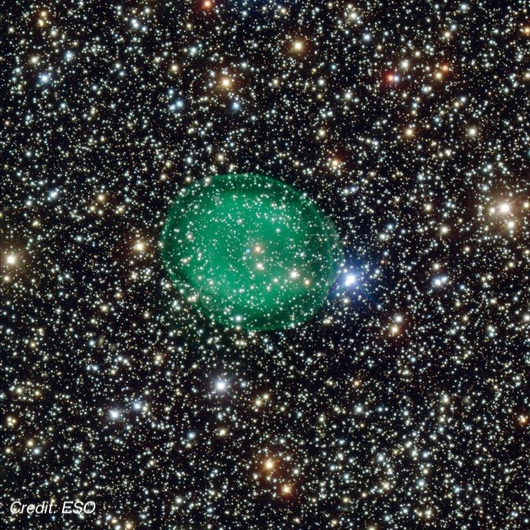
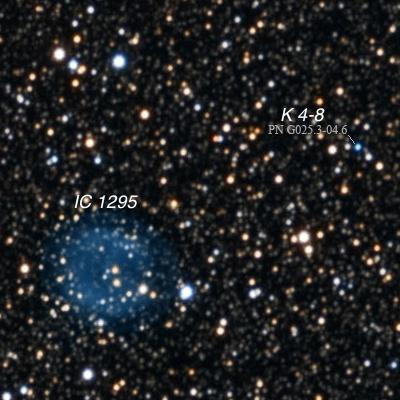

IC 1295, one of the best IC planetaries
- Name: IC 1295 = PK 25-4.2 = PN G025.4-04.7
- RA: 18h 54m 36.5s
- Dec: -08° 49' 49"
- Constellation: Scutum
- Type: Planetary Nebula
- Size: 102" x 87"
- Mag: V ≈ 12.5
- Name: Gaia DR2 parallax
- Distance: 4742 l.y.
IC 1295 has been mentioned before in the OOTW for NGC 6712 back in 2015, but it is certainly deserving of its own OOTW! William Herschel, who discovered nearby NGC 6712 missed this one, and so did his son John, when he reobserved the globular cluster from South Africa.
It was the American astronomer Truman Henry Safford, described on his Wikipedia page as a "calculating prodigy", who discovered IC 1295 on August 28, 1867. He was observing with the 18.5-inch Clark refractor at the Dearborn Observatory in Chicago.
In 1919, Heber Curtis reported it was undoubtedly a planetary nebula based on a photograph taken with the Crossley photograph. He described it as "Exceedingly faint; a faint, hazy ring about 2' x 1.5' in p. a. 90°±. The central portions are relatively vacant, and it is fainter along and at the ends of the major axis. There are three faint stars at the center, of which one is probably the central star."
Some of you may have a copy of the old Skalnate Pleso "Atlas of the Heavens". You'll find it plotted there, but mislabeled as IC 1298. That error was repeated in the first edition of the Sky Atlas 2000.0.

Older sources list this object as faint as 15th magnitude (Roger Sinnott's 1988 "NGC 2000" is one). This was a classic case of an old photographic magnitude being out of sync with its visual magnitude. My first view was back in June 1981 through my C-8. Although fairly faint, it was easily visible in the same low power field as NGC 6712 (25' to the ESE). Walter Scott Houston at Sky & Telescope had asked for readers to send in observations, which I did, and I was surprised in the October issue when he reported back on some of the observations, and mentioned mine was through the smallest scope!
The following year (1982) I took another look and was surprised to find it visible unfiltered using a 5" aperture stop on my 13.1" Odyssey I. In fact, it was quite easy using a UHC filter at 79x. So, if it's no problem for a 5", what is the smallest aperture that will show IC 1295?? Have a look and report back.
IC 1295 is located in a rich star field, which can make identifying a PN more challenging, but this guy is large -- 102" x 87" -- bigger than the Ring Nebula, so there's no problem picking it up at low power. Here's my last observation through my 24" at 220x both with and without a UHC filter:
"The rim was clearly brighter, particularly along the south side. But the west side of the planetary was weaker with a darker indentation, creating a "C" appearance, open to the west. A very faint, fairly thin outer shell was visible with careful viewing. This envelope was roughly the thickness of the brighter rim. Increasing to 375x and removing the filter, I counted 8 or 9 superimposed stars including several around or just off the edge.".
There are two stars near the center but I don't believe either of these is the central star.
But this is a "two-fer" with the stellar planetary K 4-8 just 4.7' NW in the same high power field! Now this one is stellar (at least at 500x or less), and about mag 14.2. It sits in the middle of a shallow arc (about 50" in length) of 5 stars, and you can easily identify it by blinking with a narrowband or OIII filter. This image of both PNe is from the late astrophotographer Rick Johnson.

As always,
"Give it a go and let us know!
Good luck and great viewing!"
Steve's follow-up — August 25th, 2020, 06:10 PM
Coincidentally, I observed NGC 6728 a month earlier and looked at two possible candidates. The first object is Isserstedt 662. By the way, this designation isn't found in SIMBAD but here's Isserstedt's 1968 paper (in German) that lists just over 1000 stellar groupings that supposedly mimic a ring-shape. Apparently, the idea was these "rings" had a constant size and could be used to estimate distance and possibly trace spiral structure in the Galaxy.
24" (7/18/20): at 200x, this scattered group (Isserstedt 662) stood out reasonably well, though visually it didn't appear as a distinct cluster. Roughly 30 stars were counted in a 6' region (about a dozen mag 11/12) including a few short arcs of 3 stars and one clump of 5 mag 11/12 stars. A mag 7.6 star is ~5' E. Located ~1 degree east of planetary nebula IC 1295.
Roughly 25' further east is a much larger, very scattered field (uncatalogued) with nearly 50 stars in a 15' region. But no clumps or denser areas caught my eye. Of the two candidates for NGC 6728, the first field was more prominent visually.
Steve's follow-up — August 26th, 2020, 12:58 AM
It looks like NGC 6728 = Isserstedt 662 is a legitimate cluster. A large 2018 survey "Gaia DR2 open clusters in the Milky Way" found 231 stars with a membership probability greater than 0.5. It also found a likely distance of 5770 l.y..